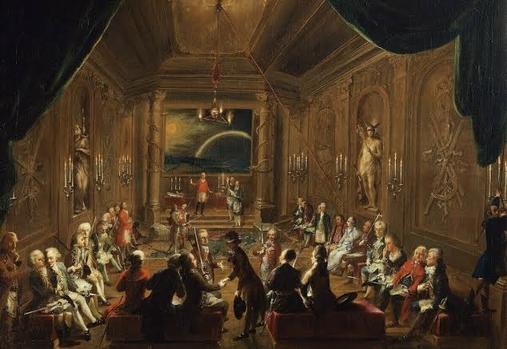

はじめに：この場所について
本サイトは、各種記録、目撃報告、回収された画像資料などをもとに、通称「陰謀論」と呼ばれる構造体の実態に迫る情報アーカイブです。
記録01：地下構造について
陰謀論的思考に見られる代表的な構造をまとめています。

記録02：関係者証言
世界的に有名な陰謀論に関する証言をまとめています。
― 滞留記録：残2／発出ログ不明 ―
本サイトは、各種記録、目撃報告、回収された画像資料などをもとに、通称「陰謀論」と呼ばれる構造体の実態に迫る情報アーカイブです。
陰謀論的思考に見られる代表的な構造をまとめています。
世界的に有名な陰謀論に関する証言をまとめています。